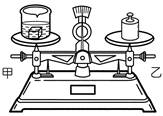
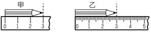
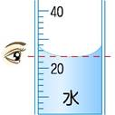
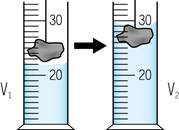
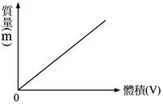
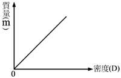
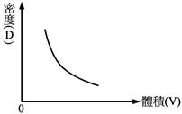
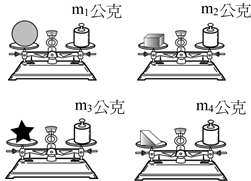

第 1 章 基本測量
1-1 長度、質量與時間（一）
物理量、SI 制與長度單位換算
一、物理量與國際單位制（SI 制）
1. 物理量：凡是可以用「數值」與「單位」來客觀表示測量結果的特殊屬性，稱為物理量。
2. 國際單位制（SI 制）：各國文化與計量習慣不同，為方便科學交流與貿易比較，國際度量衡大會制定了一套共同採用的標準計量單位制。
| 基本物理量 |
國際標準單位（SI 制） |
英文單位符號 |
常用測量工具 |
| 長度 |
公尺（米） |
m |
直尺、皮尺、游標卡尺 |
| 質量 |
公斤（千克） |
kg |
上皿天平、電子天平、三梁天平 |
| 時間 |
秒 |
s |
秒錶、手錶、單擺計時器 |
二、長度的測量與單位換算
• 長度的國際標準單位為 公尺（符號：m）。
| 長度單位 |
公里 (千米) |
公尺 (米) |
公寸 |
公分 (厘米) |
毫米 (毫米) |
微米 |
奈米 |
| 英文符號 |
km |
m |
dm |
cm |
mm |
μm |
nm |
| 換算公尺 (m) |
103 m |
1 m |
10-1 m |
10-2 m |
10-3 m |
10-6 m |
10-9 m |
| 生活實例 |
兩地公路距離 |
跑道長度、身高 |
手掌跨距 |
原子筆長度 |
雨滴直徑、筆芯 |
細菌細胞大小 |
病毒直徑、DNA分子 |
💡 長度單位記憶口訣與倍率關係：
1 km = 1000 m = 103 m ｜ 1 m = 100 cm = 1000 mm ｜ 1 mm = 1000 μm = 106 nm。
大單位化為小單位乘正次方（例：2.5 km = 2.5 × 103 m）；小單位化大單位乘負次方。
1-1 長度、質量與時間（二）
質量定義、測量天平與時間的測量
一、質量的定義與測量工具
1. 質量的定義：物體內所含 物質的量 稱為質量。質量是物體本身的固有屬性，不隨物體的位置、形狀、溫度或重力大小而改變。
2. 質量的國際單位：SI 制中質量的國際標準單位為 公斤（千克，符號：kg）。
| 質量單位名稱 |
英文符號 |
換算為公克 (g) |
科學記號表示 |
| 公斤（千克） |
kg |
1000 g |
103 g |
| 公克（克） |
g |
1 g |
1 g |
| 毫克 |
mg |
0.001 g |
10-3 g |
二、常見質量測量儀器對照
• 上皿天平：利用 等臂槓桿原理 比較兩端重力大小以求質量；若將天平移至月球，兩端受重力同等減弱，仍能測出正確質量。
• 電子天平：操作簡便、秤量靈敏精準，具備一鍵自動歸零（扣重）功能，為現代實驗室最廣泛採用的工具。
三、時間的定義與測量原理
1. 時間測量原理：凡具有 規律性 與 週而復始 特性的現象或器具，均可用於描述或測量時間間隔（如日出日落、月相盈虧、脈搏、石英震盪）。
2. 時間的國際單位：時間的 SI 制標準單位為 秒（符號：s）。
3. 常見時間單位：1 日 = 24 小時 = 1440 分 = 86400 秒。
💡 重點思維檢核：
一塊 100 g 的黏土，無論搓成圓球、捏成薄餅，或壓扁成碎塊，其所含物質總量未變，因此質量始終 相等。
1-2 測量與估計（一）
上皿天平操作步驟、歸零原則與注意事項
一、上皿天平的操作四步驟
| 操作步驟 |
操作重點與口訣 |
關鍵原理說明 |
| 1. 歸零校準 |
秤盤放妥，調整左右兩端 校準螺絲，使指針正指中央零位。 |
指針偏左表示左盤較重，螺絲應往 右 旋調；偏右則往左旋調。 |
| 2. 物體放置 |
依習慣原則：左盤放待測物，右盤放砝碼。 |
秤量藥品時，需先於兩盤放置 秤量紙 再重新歸零。 |
| 3. 夾取砝碼 |
必須使用 砝碼夾，由 大 至 小 依序夾放於秤盤中央。 |
不可用手直接觸碰，以免汗垢腐蝕生鏽影響準確度。 |
| 4. 讀數平衡 |
指針停於中央或左右擺幅相等時，待測物質量等於 砝碼總質量。 |
上皿天平兩臂等長，兩盤平衡時力矩相等，即重量與質量相等。 |
二、上皿天平校準螺絲調整核心圖解

圖 1-1 上皿天平指針偏左示意圖
【校準螺絲旋動法則：哪邊輕就往哪邊轉！】
• 指針偏左：表示左邊秤盤偏重、右邊偏輕 $implies$ 兩端螺絲甲、乙都必須向 右 旋動。
• 指針偏右：表示右邊秤盤偏重、左邊偏輕 $implies$ 兩端螺絲甲、乙都必須向 左 旋動。
三、天平測量的常考陷阱與注意事項
1. 砝碼生鏽的影響：生鏽是金屬與氧結合，使砝碼本身質量 變大。因此只需較少或較小標籤的砝碼即可平衡物體，導致測量記錄值將 小於 物品實際真實質量！
2. 砝碼磨損的影響：砝碼質量變輕，需更多砝碼才能平衡，測量值將 大於 物品實際質量。
3. 水平平衡後更換秤盤：若更換不同質量的秤盤，會破壞原先的校準平衡，直接導致測量結果產生誤差。
1-2 測量與估計（二）
測量值結構、估計值判讀與多次測量平均
一、測量值的完整表示法
任何物理測量值必須包含兩部分：測量值 ＝【數值】＋【單位】（缺單位則無物理意義！）。
其中數值部分必定由兩項組成：數值 ＝【一組準確值】＋【一位估計值】。
| 測量記錄實例 |
準確值部分 |
估計值部分 |
測量工具的最小刻度 |
| 14.75 cm |
14.7 cm |
0.05 cm |
0.1 cm (1 mm) |
| 3.00 cm |
3.0 cm |
0.00 cm |
0.1 cm (1 mm) |
| 25.4 秒 |
25 秒 |
0.4 秒 |
1 秒 |
二、估計值的判讀原則
1. 準確值：記錄至測量工具所具備的 最小刻度。
2. 估計值：對於最小刻度以下無法精確讀取的長度，以肉眼估計一位，即最小刻度的 下一位。
3. 對齊刻度線補零規則：若待測物邊緣恰好落在最小刻度線上，仍必須在估計位補寫 0，表示曾進行該位數的估計（例如最小刻度為 mm，測得恰為 5 公分，應記為 5.00 cm）。
三、減少誤差的有效方法 —— 多次測量取平均值
凡測量必有誤差，計算多次測量的平均值可以有效減少個人主觀估計所產生的偶然誤差。
•
平均值計算重要規則：若數據中有明顯人為抄寫錯誤或嚴重離群值，應先
剔除；計算出的平均值，其小數位數應與原測量值的估計值位數保持一致（四捨五入）。
1-2 隨堂實戰評量
單元核心觀念評量題組 (Q1～Q6)
(A) 時間：秒 (s)
(B) 長度：公分 (cm)
(C) 長度：公尺 (m)
(D) 質量：公斤 (kg)
(A) 測量前秤盤先放妥，須先調整校準螺絲歸零
(B) 砝碼與待測物應盡量放在秤盤的正中央
(C) 秤量化學藥品時，應在秤盤上放秤量紙後再重新歸零
(D) 放置砝碼時應由小至大依序放置
(A) 甲、乙都向左旋動
(B) 甲、乙都向右旋動
(C) 甲向左旋，乙向右旋
(D) 甲向右旋，乙向左旋
(A) 兩邊各放上等重的砝碼
(B) 將整個天平裝置移至高山上再測量
(C) 更換放置砝碼的秤盤
(D) 砝碼與待測物互換位置（上皿天平兩臂等長）
(A) 估計值位數估計愈多位，則測量結果愈準確
(B) 多次測量後再取平均值，通常可以得到較準確的測量結果
(C) 選擇不同的測量工具，不會影響測量的結果與最小刻度
(D) 使用相同的測量工具，測量同一個物品，測量的結果必定完全相同
(A) 甲尺測量值為 3.0 cm（最小刻度為 cm）
(B) 甲、乙兩把尺的最小刻度不同
(C) 乙尺測量值應記錄為 3.0 cm
(D) 使用乙尺可測得較準確的測量值

1-3 體積與密度（一）
體積測量法、量筒視線讀數與沉體排水法
一、固體與液體體積的測量方法
| 待測物種類 |
測量方式與工具 |
操作要點與關鍵公式 |
| 規則形狀固體 |
以直尺測量邊長 |
以幾何公式計算（長方體 $V = a imes b imes c$） |
| 液體體積 |
量筒、滴定管、量瓶 |
平視量筒內凹液面之 中央最低處 讀數 |
| 不規則沉體固體 |
量筒＋水（排水法） |
固體體積 $V =$ 沒入後總體積 $V_2$ － 原水體積 $V_1$ |
二、量筒讀數視線與排水法圖解

圖 1-2 量筒視線平視中央最低處

圖 1-3 沉體排水法：物體體積＝V2－V1
💡 排水法適用條件與特殊處理法：
1. 沉體且不溶於水：可直接利用水進行排水法測量。
2. 浮體（如軟木塞、保麗龍）：需先綁附重物，使用「下墜沉體綑綁法」扣除重物體積。
3. 易溶於水之固體（如砂糖、食鹽）：絕不可用水！需改用固體不互溶的液體（如飽和食鹽水、酒精）。
三、體積與容積單位換算大對照
| 體積單位 |
立方公尺 (m3) |
立方公寸 (dm3) |
立方公分 (cm3) |
| 對應容積單位 |
公秉（千升, kL） |
公升 (L) |
毫升 (mL / c.c.) |
| 換算公升 (L) |
1000 L (103 L) |
1 L |
0.001 L (10-3 L) |
1-3 體積與密度（二）
密度定義、計算公式與三大正反比圖解
一、密度的定義與核心公式
1.
密度的定義：單位
體積 內所含的
質量 多寡，反映物質組成分子的緻密程度。
2.
密度的單位：$ ext{g/cm}^3$（公克/立方公分）或 $ ext{kg/m}^3$（公斤/立方公尺）。換算：$1 ext{ g/cm}^3 = 1000 ext{ kg/m}^3$。
3.
特性：在固定的溫度與壓力下，同一種均勻物質的密度為
定值，可用來作為
判斷物質種類之重要依據。
二、物質密度、體積與質量的三大關係與圖解
| 關係一：同種物質 (D 固定) |
關係二：同體積 (V 固定) |
關係三：同質量 (M 固定) |
• 體積愈大，質量愈 大。
• M 與 V 成正比。
• M-V 圖為過原點之斜直線，斜率愈大，密度 D 愈大。
|
• 密度愈大，質量愈 大。
• M 與 D 成正比。
• M-D 圖為過原點之斜直線，斜率代表體積 V。
|
• 密度愈大，體積愈 小。
• V 與 D 成反比。
• V-D 圖為平滑雙曲線，乘積 $M = D imes V$ 為定值。
|

M 與 V 成正比 (D固定)
|

M 與 D 成正比 (V固定)
|

V 與 D 成反比 (M固定)
|
1-3 隨堂實戰評量
單元核心觀念評量題組 (Q1～Q6)
(A) 小鋼珠
(B) 鐵尺
(C) 黑糖（易溶於水）
(D) 橡皮擦
| 次別 |
第 1 次 |
第 2 次 |
第 3 次 |
第 4 次 |
| 體積 V（立方公分） |
10 |
20 |
30 |
40 |
| 總質量 m（公克） |
30 |
38 |
46 |
54 |
(A) 0.3 公克∕立方公分
(B) 0.8 公克∕立方公分
(C) 1.0 公克∕立方公分
(D) 3.0 公克∕立方公分
(A) 107.5 cm3
(B) 100 cm3（質量守恆 M=100g，V=M/D=100/1=100）
(C) 93 cm3
(D) 10 cm3
(A) 銅球體積為 89 cm3
(B) 銅球質量為 10 g
(C) 量筒內水的體積為 89 cm3
(D) 銅球的質量為 89 g（M＝D×V＝8.9×10＝89）
(A) 甲乙
(B) 乙丙
(C) 甲丁
(D) 甲戊（排除中空內部體積）
(A) m1 ＝ m2 ＝ m3 ＝ m4（形狀改變質量不變）
(B) m1 ＞ m2 ＞ m3 ＞ m4
(C) m1 ＜ m2 ＜ m3 ＜ m4
(D) 形狀不同，無法比較質量的大小

第 1 章 基本測量 全章知識體系心智圖
全章知識地圖導覽
三大主題核心架構梳理
📌 1-1 長度、質量與時間
- 物理量：以數值與單位客觀表示結果。
- SI 制三大基本量：
- 長度：公尺 (m)（1 km = 103m, 1 μm = 10-6m, 1 nm = 10-9m）
- 質量：公斤 (kg)（物體所含物質總量，位置改變質量不變）
- 時間：秒 (s)（具規律週期性循環現象）
📌 1-2 測量、天平與估計
- 測量值組成：準確值（到最小刻度）＋ 估計值（下一位，僅一位）。
- 上皿天平規則：
- 歸零口訣：哪邊輕校準螺絲就往哪邊轉。
- 操作：左物右碼、砝碼夾由大至小取放。
- 生鏽陷阱：生鏽砝碼質量變重 $implies$ 測量值偏小。
- 平均值：剔除離群錯誤值後相加除以次數。
📌 1-3 體積、容積與密度
• 量筒讀數：視線水平平視凹液面中央最低處。
• 排水法：沉體不溶於水，固體體積 $V = V_2 - V_1$。
• 單位換算：$1 ext{ m}^3 = 1000 ext{ L} = 1 ext{ kL}$ ｜ $1 ext{ cm}^3 = 1 ext{ mL} = 10^{-3} ext{ L}$。
• 密度核心公式：$D = �rac{M}{V}$（定溫定壓下同種物質密度為定值）。
• 三大正反比規律：
① 同種物質 ($D$ 定)：$M$ 與 $V$ 成正比（$M-V$ 斜直線，斜率即密度）
② 同體積 ($V$ 定)：$M$ 與 $D$ 成正比 ｜ ③ 同質量 ($M$ 定)：$V$ 與 $D$ 成反比。
💡 解題金三角口訣：求密度除以體積（$D = M/V$）；求質量兩者相乘（$M = D imes V$）；求體積質量除以密度（$V = M/D$）。
第 1 章 考前盤點與自我檢核
全章常考盲點對照與自我檢核
重點梳理 ＆ 課後通關檢核
| 小節主題 |
核心概念精華與常考盲點對照 |
| 1-1 單位換算 |
• 常考盲點：微米與奈米混淆。記住：$1 ext{ mm} = 10^{-3} ext{ m}$、$1 mu ext{m} = 10^{-6} ext{ m}$、$1 ext{ nm} = 10^{-9} ext{ m}$。
• 質量與重量不同：質量不隨地點改變（月球上天平仍可量質量，彈簧秤則量出 1/6 重量）。
|
| 1-2 天平與估計 |
• 天平螺絲口訣：哪邊輕螺絲就往哪邊旋！（指針偏左向右調，偏右向左調）。
• 砝碼生鏽：砝碼變重 $implies$ 需更少砝碼 $implies$ 測量值偏小。
• 估計位數：剛好在刻度線上必須補 0，估計值僅有一位，多估無意義。
|
| 1-3 體積與密度 |
• 排水法限制：易溶於水或浮體不可直接量；量筒讀數需看中央最低處。
• 冰熔化成水：質量守恆（100g 冰變 100g 水），體積因密度變大而縮小為 100 cm3。
• 液體＋量筒作圖：總質量對液體體積之圖形不通過原點，縱軸截距為「量筒空重」。
|
二、課後 6 大能力通關檢核清單（點擊方框可自我檢視）
☑ 1. 我能熟練換算長度（km 到 nm）與質量（kg 到 mg）的科學記號。
☑ 2. 我能正確說出上皿天平指針偏斜時校準螺絲的調整方向（朝較輕處旋）。
☑ 3. 我能正確寫出測量值，明確區分準確值與一位估計值（如 14.75 cm）。
☑ 4. 我能說明使用排水法測量固體體積的條件及量筒視線讀取原則。
☑ 5. 我能熟練運用密度公式 $D = M/V$ 進行質量、體積與密度的計算與換算。
☑ 6. 我能由 $M-V$ 坐標圖中直線的斜率判斷並比較不同物質密度的大小。